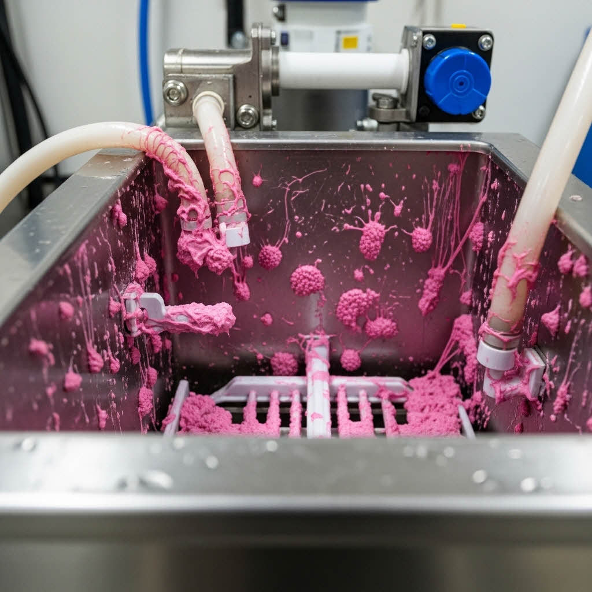
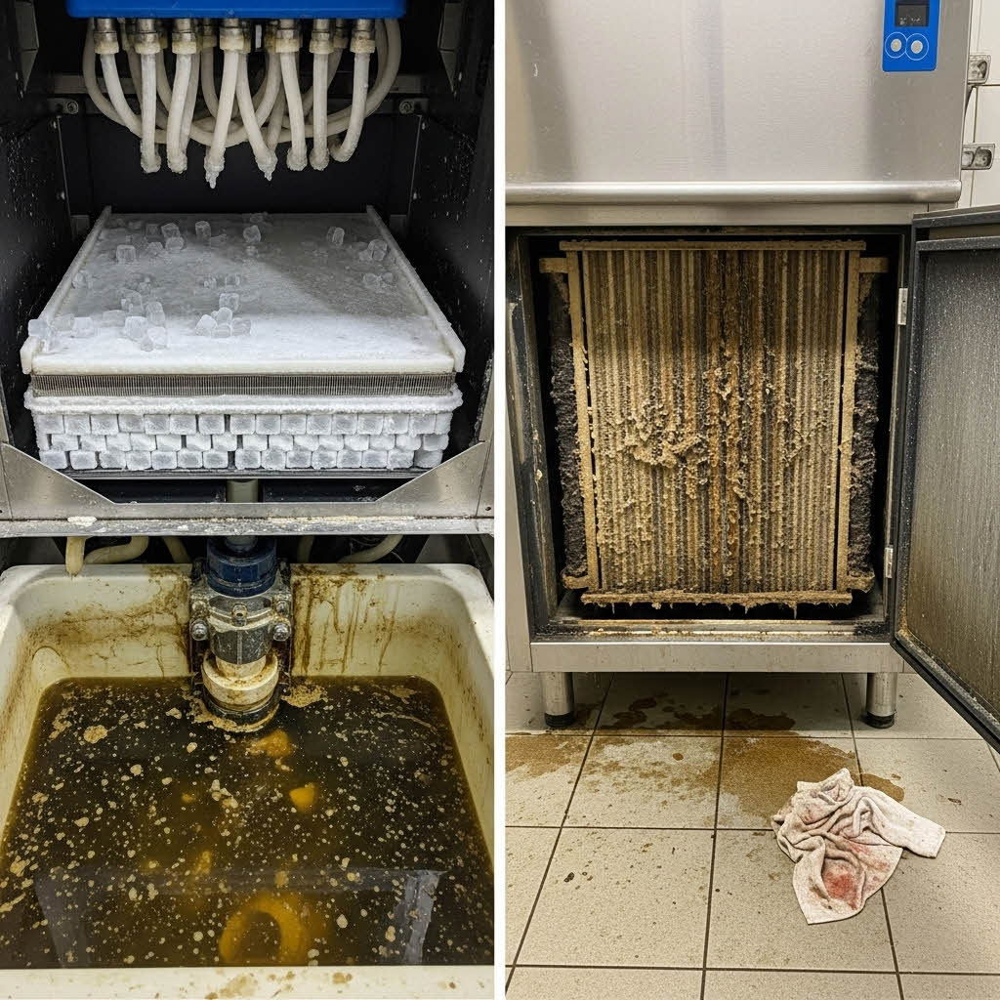
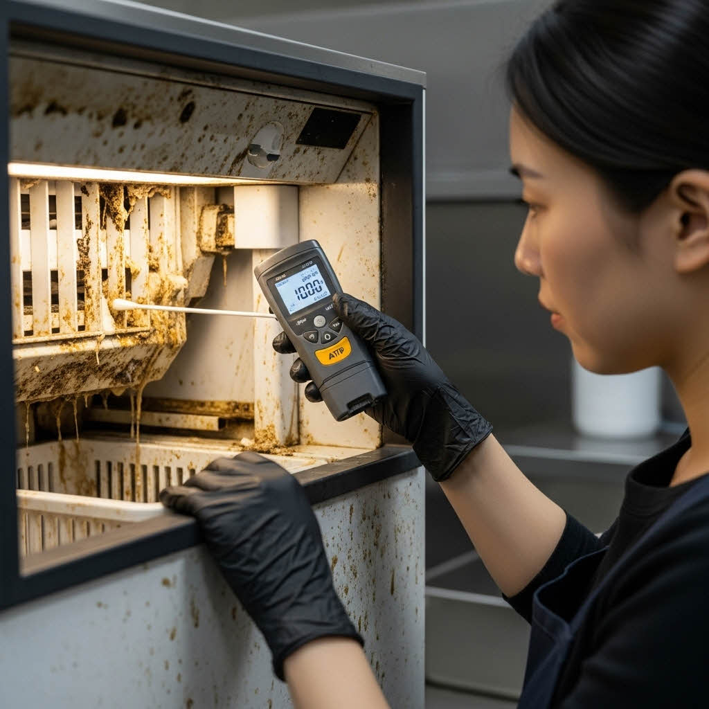
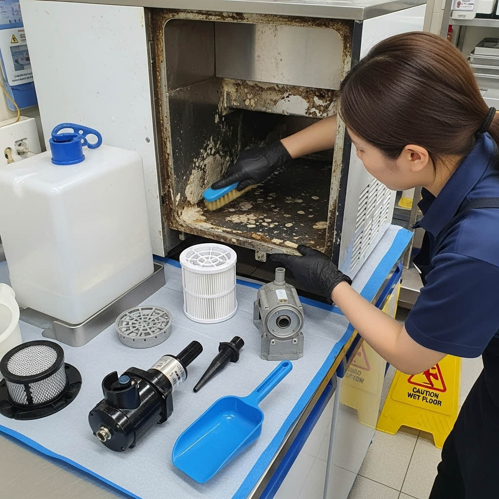
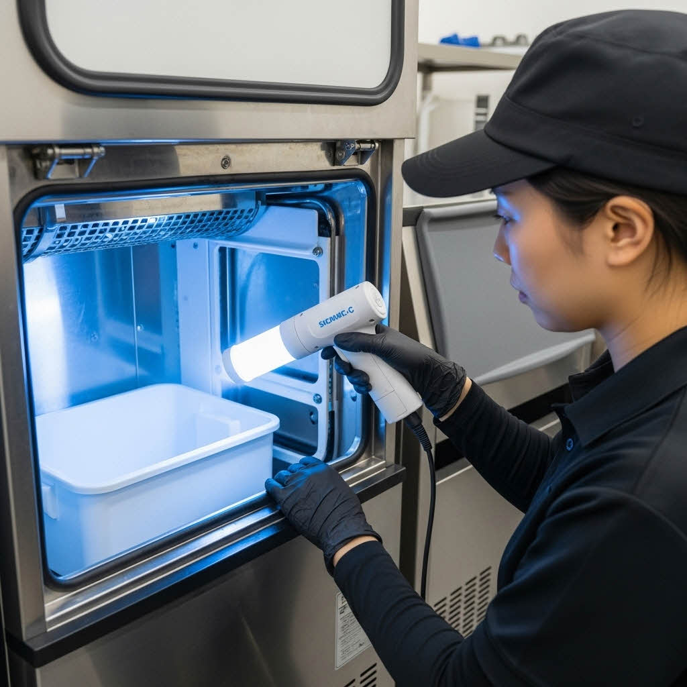

호텔, 요식업소, 병원 등 상업 시설에서 공용 제빙기의 위생 상태는 식품 안전과 고객 만족도에 직접적인 영향을 미칩니다.
아래 체크리스트는 제빙기의 위생 상태를 평가하고, 전문적인 정기 관리가 필요한 시점을 정확히 파악하는 데 중요 합니다.
제빙기 위생관리 프로세스
| 항목 | 확인 사항 (내용) | 이행 |
|---|---|---|
| 청소 전 촬영 | 상세 위치 표시된 스티커와 내부가 선명하게 보이도록 촬영 하였는가? | |
| 청소 (내부) |
얼음제거 및 폐기, 이물질 제거 커튼, 스토퍼, 노즐, 트레이, 밸브, 펌프 분해 세척 내부 고온 스팀 살균 세척 |
|
| 청소 (외부) | 외부 및 틈새 스팀 청소 진행 | |
| 소독 | 자외선 살균 소독 확인 | |
| 청소 후 촬영 | 스티커 재 부착 후 작업 완료 사진 촬영 | |
| 마무리 | 스티커 제거 및 작동 확인, 주변 정리 | |
| 특이사항 | 작동 불량 등 특이사항 발생시 전면 부착 |
제빙기 위생 체크리스트
상업 시설 내 공용 제빙기는 하루에 수백 회 얼음을 생산하며 물과 전기가 항상 접촉합니다. 특히 내부 미온대(20~30°C) 형성 및 높은 습도로 인해 슬라임(Biofilm, 생물막)과 곰팡이가 가정용 대비 수십 배 빠르게 번식하는 최고 위험 구역입니다.
단순한 표면 청소가 아닌 전문적인 분해 소독이 필수적입니다. 슬라임은 제빙 효율을 떨어뜨릴 뿐만 아니라, 식중독균(대장균, 효모균 등)의 주요 서식처가 되어 식품 안전을 위협하고, 장비 고장의 핵심 원인이 됩니다.
제빙부 증발기(플레이트)의 심각한 석회질 및 곰팡이 오염
물탱크와 호스에 형성된 끈적한 핑크색 슬라임 (효모균)
제빙기 외관, 주변, 콘덴서(응축기)
실제 현장에서 발견되는 제빙기 오염 사례
단순히 물통만 닦는 수준으로는 증발기 깊은 곳의 석회질이나 호스 내부의 슬라임 문제를 해결할 수 없습니다. 전문적인 주기 관리를 통해 고객 안전 확보, 위생 리스크 감소, 장비 수명 연장 효과를 얻어야 합니다.
제빙기 내부 오염은 다음 요소들이 복합적으로 작용하여 발생하며, 클린메이트의 전문 관리가 가장 높은 RLU 수치를 기록하는 주요 오염 부위를 정확히 진단합니다.
클린메이트는 제조사별 구조 특성 및 상업용 환경을 고려하여, 단순 세척이 아닌 정밀 분해·살균·스케일 제거·항균 코팅의 5단계 전문 프로세스를 적용하여 근본적인 위생 문제를 해결합니다.
ATP 측정기를 활용해 저빙고 스쿠프, 출빙구, 물탱크 입구 등 고접촉 및 고오염 구역의 오염도를 객관적인 수치(RLU)로 측정합니다. 초기 오염도와 최종 개선도를 고객사에 데이터로 제공하며, 위험 기준치 초과 항목을 집중 관리합니다.
ATP 바이오 오염도 진단
커버, 에어 필터, 물탱크, 급수 펌프, 노즐, 스쿠프 등 탈부착 가능한 모든 부품을 분리합니다. 특히 급수 호스 내부와 증발기 후면 등 육안 확인이 불가능한 은폐 구역을 정확히 식별하고 부품별 오염 레벨을 기록합니다.
제빙기 구조 분해
식품 안전 인증을 받은 친환경 약품(Ice Maker Cleaner)을 사용하여 세척 및 스케일 제거를 진행합니다. 제빙 플레이트에 침적된 단단한 석회질(스케일)을 스팀기를 사용해 녹여내고, 물탱크와 호스 내부의 슬라임(물때)을 멸균 처리합니다. 모든 작업은 제조사 권장 규격에 따라 진행됩니다.

친환경 약품 침적 및 스팀 청소작업
세척 후 UV-C 자외선을 이용하여 남아있는 세균 및 곰팡이 포자를 완벽하게 살균합니다. 이후 저빙고 내부와 물탱크 표면에 FDA 인증 항균 코팅제를 도포하여 관리 주기 중 슬라임 및 곰팡이 재번식을 장기간 억제합니다.
고강도 살균 및 항균 코팅
작업 완료 후 동일 지점을 재측정하여 개선 수치(RLU)를 비교합니다. 작업 전/후 사진, ATP 데이터, 장비 점검 리포트가 포함된 보고서를 제공하며, 이력 데이터는 향후 장비 고장 예측 및 정기 관리 주기 추천에 활용됩니다.

사후 ATP 재측정 및 보고서 제공
사용 환경(주변 온도), 사용량(제빙 속도), 물의 경도 등 상업 시설의 운영 특성에 따라 가장 효율적인 전문 관리 주기를 권장합니다.
정기적인 전문 관리 후 고객사는 단순한 청결 유지를 넘어, 다음과 같은 실질적인 개선 효과를 얻을 수 있습니다.
제빙기는 단순한 가전이 아닌,
고객 신뢰와 식품 안전을 책임지는 핵심 장비입니다.
클린메이트는 10년의 현장 경험과 과학적 데이터를 바탕으로
귀사에게 가장 적합한 위생 관리 솔루션을 자신 있게 제안합니다.
VVIP 대응팀